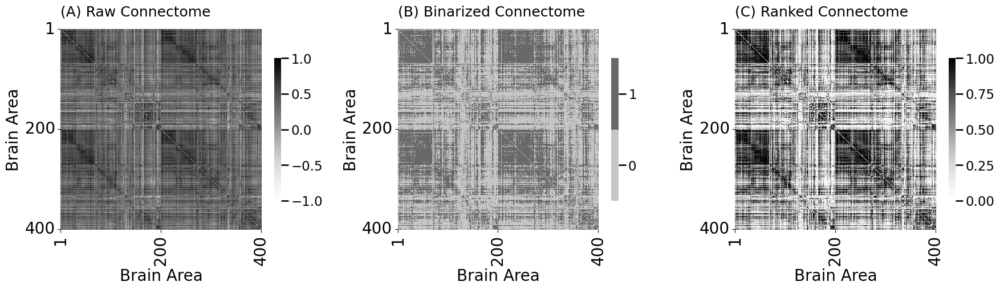
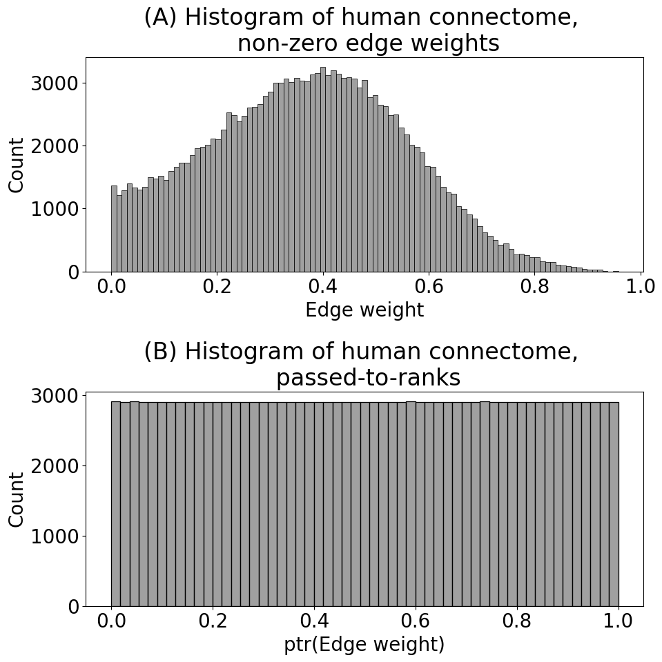

Prepare the Data#
mode = "svg" # output format for figs
import matplotlib
font = {'family' : 'Dejavu Sans',
'weight' : 'normal',
'size' : 20}
matplotlib.rc('font', **font)
import matplotlib
from matplotlib import pyplot as plt
import os
import urllib
import boto3
from botocore import UNSIGNED
from botocore.client import Config
from graspologic.utils import import_edgelist
import numpy as np
import glob
from tqdm import tqdm
# the AWS bucket the data is stored in
BUCKET_ROOT = "open-neurodata"
parcellation = "Schaefer400"
FMRI_PREFIX = "m2g/Functional/BNU1-11-12-20-m2g-func/Connectomes/" + parcellation + "_space-MNI152NLin6_res-2x2x2.nii.gz/"
FMRI_PATH = os.path.join("datasets", "fmri") # the output folder
DS_KEY = "abs_edgelist" # correlation matrices for the networks to exclude
def fetch_fmri_data(bucket=BUCKET_ROOT, fmri_prefix=FMRI_PREFIX,
output=FMRI_PATH, name=DS_KEY):
"""
A function to fetch fMRI connectomes from AWS S3.
"""
# check that output directory exists
if not os.path.isdir(FMRI_PATH):
os.makedirs(FMRI_PATH)
# start boto3 session anonymously
s3 = boto3.client('s3', config=Config(signature_version=UNSIGNED))
# obtain the filenames
bucket_conts = s3.list_objects(Bucket=bucket,
Prefix=fmri_prefix)["Contents"]
for s3_key in tqdm(bucket_conts):
# get the filename
s3_object = s3_key['Key']
# verify that we are grabbing the right file
if name not in s3_object:
op_fname = os.path.join(FMRI_PATH, str(s3_object.split('/')[-1]))
if not os.path.exists(op_fname):
s3.download_file(bucket, s3_object, op_fname)
def read_fmri_data(path=FMRI_PATH):
"""
A function which loads the connectomes as adjacency matrices.
"""
fnames = glob.glob(os.path.join(path, "*.csv"))
fnames.sort()
# import edgelists with graspologic
# edgelists will be all of the files that end in a csv
networks = [import_edgelist(fname) for fname in tqdm(fnames)]
return np.stack(networks, axis=0)
/opt/hostedtoolcache/Python/3.12.5/x64/lib/python3.12/site-packages/tqdm/auto.py:21: TqdmWarning: IProgress not found. Please update jupyter and ipywidgets. See https://ipywidgets.readthedocs.io/en/stable/user_install.html
from .autonotebook import tqdm as notebook_tqdm
fetch_fmri_data()
As = read_fmri_data()
A = As[0]
0%| | 0/212 [00:00<?, ?it/s]
100%|██████████| 212/212 [00:00<00:00, 217459.64it/s]
0%| | 0/106 [00:00<?, ?it/s]
1%| | 1/106 [00:00<00:30, 3.40it/s]
2%|▏ | 2/106 [00:00<00:30, 3.41it/s]
3%|▎ | 3/106 [00:00<00:30, 3.40it/s]
4%|▍ | 4/106 [00:01<00:29, 3.40it/s]
5%|▍ | 5/106 [00:01<00:29, 3.40it/s]
6%|▌ | 6/106 [00:01<00:29, 3.40it/s]
7%|▋ | 7/106 [00:02<00:29, 3.37it/s]
8%|▊ | 8/106 [00:02<00:28, 3.39it/s]
8%|▊ | 9/106 [00:02<00:28, 3.39it/s]
9%|▉ | 10/106 [00:02<00:28, 3.38it/s]
10%|█ | 11/106 [00:03<00:28, 3.39it/s]
11%|█▏ | 12/106 [00:03<00:27, 3.39it/s]
12%|█▏ | 13/106 [00:03<00:27, 3.39it/s]
13%|█▎ | 14/106 [00:04<00:27, 3.36it/s]
14%|█▍ | 15/106 [00:04<00:26, 3.38it/s]
15%|█▌ | 16/106 [00:04<00:26, 3.40it/s]
16%|█▌ | 17/106 [00:05<00:26, 3.38it/s]
17%|█▋ | 18/106 [00:05<00:25, 3.38it/s]
18%|█▊ | 19/106 [00:05<00:25, 3.37it/s]
19%|█▉ | 20/106 [00:05<00:25, 3.38it/s]
20%|█▉ | 21/106 [00:06<00:25, 3.35it/s]
21%|██ | 22/106 [00:06<00:24, 3.37it/s]
22%|██▏ | 23/106 [00:06<00:24, 3.37it/s]
23%|██▎ | 24/106 [00:07<00:24, 3.37it/s]
24%|██▎ | 25/106 [00:07<00:23, 3.39it/s]
25%|██▍ | 26/106 [00:07<00:23, 3.39it/s]
25%|██▌ | 27/106 [00:07<00:23, 3.39it/s]
26%|██▋ | 28/106 [00:08<00:23, 3.37it/s]
27%|██▋ | 29/106 [00:08<00:22, 3.37it/s]
28%|██▊ | 30/106 [00:08<00:22, 3.39it/s]
29%|██▉ | 31/106 [00:09<00:22, 3.35it/s]
30%|███ | 32/106 [00:09<00:21, 3.37it/s]
31%|███ | 33/106 [00:09<00:21, 3.38it/s]
32%|███▏ | 34/106 [00:10<00:21, 3.38it/s]
33%|███▎ | 35/106 [00:10<00:21, 3.35it/s]
34%|███▍ | 36/106 [00:10<00:20, 3.35it/s]
35%|███▍ | 37/106 [00:10<00:20, 3.36it/s]
36%|███▌ | 38/106 [00:11<00:20, 3.33it/s]
37%|███▋ | 39/106 [00:11<00:20, 3.34it/s]
38%|███▊ | 40/106 [00:11<00:19, 3.34it/s]
39%|███▊ | 41/106 [00:12<00:19, 3.33it/s]
40%|███▉ | 42/106 [00:12<00:19, 3.35it/s]
41%|████ | 43/106 [00:12<00:18, 3.35it/s]
42%|████▏ | 44/106 [00:13<00:18, 3.36it/s]
42%|████▏ | 45/106 [00:13<00:18, 3.34it/s]
43%|████▎ | 46/106 [00:13<00:17, 3.34it/s]
44%|████▍ | 47/106 [00:13<00:17, 3.36it/s]
45%|████▌ | 48/106 [00:14<00:17, 3.35it/s]
46%|████▌ | 49/106 [00:14<00:16, 3.37it/s]
47%|████▋ | 50/106 [00:14<00:16, 3.38it/s]
48%|████▊ | 51/106 [00:15<00:16, 3.37it/s]
49%|████▉ | 52/106 [00:15<00:16, 3.35it/s]
50%|█████ | 53/106 [00:15<00:15, 3.36it/s]
51%|█████ | 54/106 [00:16<00:15, 3.37it/s]
52%|█████▏ | 55/106 [00:16<00:15, 3.35it/s]
53%|█████▎ | 56/106 [00:16<00:14, 3.38it/s]
54%|█████▍ | 57/106 [00:18<00:32, 1.51it/s]
55%|█████▍ | 58/106 [00:18<00:26, 1.82it/s]
56%|█████▌ | 59/106 [00:18<00:22, 2.12it/s]
57%|█████▋ | 60/106 [00:18<00:19, 2.41it/s]
58%|█████▊ | 61/106 [00:19<00:16, 2.65it/s]
58%|█████▊ | 62/106 [00:19<00:15, 2.85it/s]
59%|█████▉ | 63/106 [00:19<00:14, 3.01it/s]
60%|██████ | 64/106 [00:20<00:13, 3.14it/s]
61%|██████▏ | 65/106 [00:20<00:12, 3.21it/s]
62%|██████▏ | 66/106 [00:20<00:12, 3.28it/s]
63%|██████▎ | 67/106 [00:21<00:11, 3.33it/s]
64%|██████▍ | 68/106 [00:21<00:11, 3.37it/s]
65%|██████▌ | 69/106 [00:21<00:10, 3.39it/s]
66%|██████▌ | 70/106 [00:21<00:10, 3.40it/s]
67%|██████▋ | 71/106 [00:22<00:10, 3.41it/s]
68%|██████▊ | 72/106 [00:22<00:10, 3.39it/s]
69%|██████▉ | 73/106 [00:22<00:09, 3.40it/s]
70%|██████▉ | 74/106 [00:23<00:09, 3.40it/s]
71%|███████ | 75/106 [00:23<00:09, 3.41it/s]
72%|███████▏ | 76/106 [00:23<00:08, 3.42it/s]
73%|███████▎ | 77/106 [00:23<00:08, 3.43it/s]
74%|███████▎ | 78/106 [00:24<00:08, 3.44it/s]
75%|███████▍ | 79/106 [00:24<00:07, 3.41it/s]
75%|███████▌ | 80/106 [00:24<00:07, 3.42it/s]
76%|███████▋ | 81/106 [00:25<00:07, 3.44it/s]
77%|███████▋ | 82/106 [00:25<00:06, 3.45it/s]
78%|███████▊ | 83/106 [00:25<00:06, 3.44it/s]
79%|███████▉ | 84/106 [00:25<00:06, 3.46it/s]
80%|████████ | 85/106 [00:26<00:06, 3.47it/s]
81%|████████ | 86/106 [00:26<00:05, 3.44it/s]
82%|████████▏ | 87/106 [00:26<00:05, 3.44it/s]
83%|████████▎ | 88/106 [00:27<00:05, 3.46it/s]
84%|████████▍ | 89/106 [00:27<00:04, 3.45it/s]
85%|████████▍ | 90/106 [00:27<00:04, 3.41it/s]
86%|████████▌ | 91/106 [00:28<00:04, 3.43it/s]
87%|████████▋ | 92/106 [00:28<00:04, 3.44it/s]
88%|████████▊ | 93/106 [00:28<00:03, 3.37it/s]
89%|████████▊ | 94/106 [00:28<00:03, 3.41it/s]
90%|████████▉ | 95/106 [00:29<00:03, 3.43it/s]
91%|█████████ | 96/106 [00:29<00:02, 3.41it/s]
92%|█████████▏| 97/106 [00:29<00:02, 3.40it/s]
92%|█████████▏| 98/106 [00:30<00:02, 3.41it/s]
93%|█████████▎| 99/106 [00:30<00:02, 3.41it/s]
94%|█████████▍| 100/106 [00:30<00:01, 3.38it/s]
95%|█████████▌| 101/106 [00:30<00:01, 3.41it/s]
96%|█████████▌| 102/106 [00:31<00:01, 3.42it/s]
97%|█████████▋| 103/106 [00:31<00:00, 3.44it/s]
98%|█████████▊| 104/106 [00:31<00:00, 3.42it/s]
99%|█████████▉| 105/106 [00:32<00:00, 3.42it/s]
100%|██████████| 106/106 [00:32<00:00, 3.41it/s]
100%|██████████| 106/106 [00:32<00:00, 3.27it/s]
def remove_isolates(A):
"""
A function which removes isolated nodes from the
adjacency matrix A.
"""
degree = A.sum(axis=0) # sum along the rows to obtain the node degree
out_degree = A.sum(axis=1)
A_purged = A[~(degree == 0),:]
A_purged = A_purged[:,~(degree == 0)]
print("Purging {:d} nodes...".format((degree == 0).sum()))
return A_purged
A = remove_isolates(A)
Purging 0 nodes...
import matplotlib.pyplot as plt
from graphbook_code import heatmap
A_abs = np.abs(A)
fig, axs = plt.subplots(1,3, figsize=(21, 6))
heatmap(A, ax=axs[0], title="(A) Human Connectome, Raw", vmin=np.min(A), vmax=1)
heatmap(A_abs, ax=axs[1], title="(B) Human Connectome, Absolute", vmin=np.min(A), vmax=1)
heatmap(A_abs - A, ax=axs[2], title="(C) Difference(Absolute - Raw)", vmin=0, vmax=1)
<Axes: title={'left': '(C) Difference(Absolute - Raw)'}>
from sklearn.base import TransformerMixin, BaseEstimator
class CleanData(BaseEstimator, TransformerMixin):
def fit(self, X):
return self
def transform(self, X):
print("Cleaning data...")
Acleaned = remove_isolates(X)
A_abs_cl = np.abs(Acleaned)
self.A_ = A_abs_cl
return self.A_
data_cleaner = CleanData()
A_clean = data_cleaner.transform(A)
Cleaning data...
Purging 0 nodes...
from graspologic.utils import binarize
threshold = 0.4
A_bin = binarize(A_clean > threshold)
from graspologic.utils import pass_to_ranks
A_ptr = pass_to_ranks(A_clean)
xtick = [0, 199, 399]; ytick = xtick
xlabs = [1, 200, 400]; ylabs = xlabs
fig, axs = plt.subplots(1,3, figsize=(18, 5))
heatmap(A, ax=axs[0], title="(A) Raw Connectome", vmin=-1, vmax=1, xticks=xtick, xticklabels=xlabs,
yticks=ytick, yticklabels=ylabs, xtitle="Brain Area", ytitle="Brain Area")
heatmap(A_bin.astype(int), ax=axs[1], title="(B) Binarized Connectome", xticks=xtick, xticklabels=xlabs,
yticks=ytick, yticklabels=ylabs, xtitle="Brain Area", ytitle="Brain Area")
heatmap(A_ptr, ax=axs[2], title="(C) Ranked Connectome", vmin=0, vmax=1, xticks=xtick, xticklabels=xlabs,
yticks=ytick, yticklabels=ylabs, xtitle="Brain Area", ytitle="Brain Area")
fig.tight_layout()
fname = "cleaning_connectomes"
if mode != "png":
os.makedirs(f"Figures/{mode:s}", exist_ok=True)
fig.savefig(f"Figures/{mode:s}/{fname:s}.{mode:s}")
os.makedirs("Figures/png", exist_ok=True)
fig.savefig(f"Figures/png/{fname:s}.png")

import seaborn as sns
fig, axs = plt.subplots(2,1, figsize=(10, 10))
sns.histplot(A_clean[A_clean > 0].flatten(), ax=axs[0], color="gray")
axs[0].set_xlabel("Edge weight")
axs[0].set_title("(A) Histogram of human connectome, \n non-zero edge weights")
sns.histplot(A_ptr[A_ptr > 0].flatten(), ax=axs[1], color="gray")
axs[1].set_xlabel("ptr(Edge weight)")
axs[1].set_title("(B) Histogram of human connectome, \n passed-to-ranks")
fig.tight_layout()
fname = "ptrhists"
if mode != "png":
fig.savefig(f"Figures/{mode:s}/{fname:s}.{mode:s}")
fig.savefig(f"Figures/png/{fname:s}.png")

class FeatureScaler(BaseEstimator, TransformerMixin):
def fit(self, X):
return self
def transform(self, X):
print("Scaling edge-weights...")
A_scaled = pass_to_ranks(X)
return (A_scaled)
feature_scaler = FeatureScaler()
A_cleaned_scaled = feature_scaler.transform(A_clean)
# Scaling edge-weights...
Scaling edge-weights...
from sklearn.pipeline import Pipeline
num_pipeline = Pipeline([
('cleaner', CleanData()),
('scaler', FeatureScaler()),
])
A_xfm = num_pipeline.fit_transform(A)
Cleaning data...
Purging 0 nodes...
Scaling edge-weights...
A_xfm2 = num_pipeline.fit_transform(As[1])
Cleaning data...
Purging 0 nodes...
Scaling edge-weights...